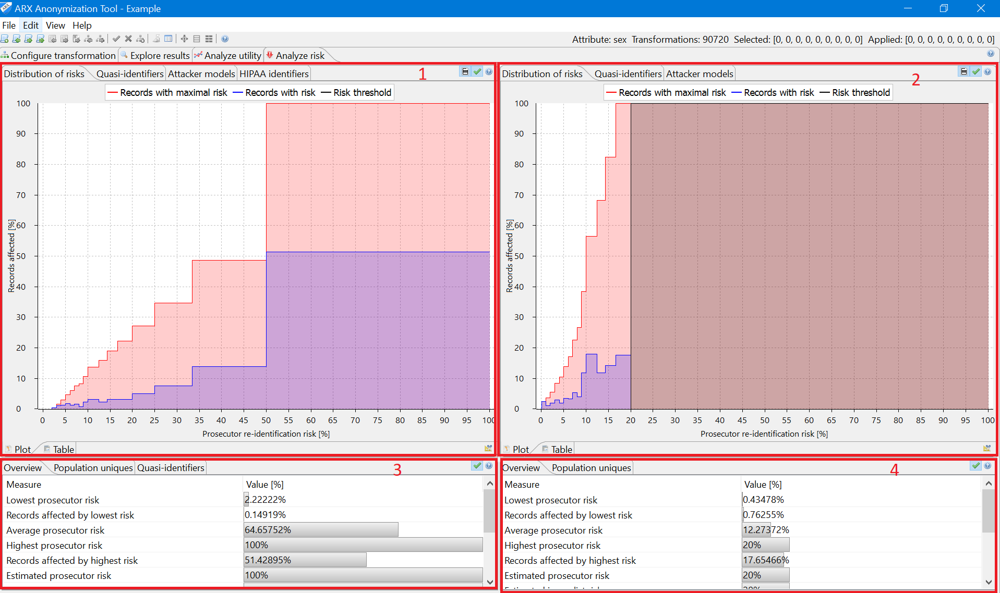

In this perspective, various privacy risks can be analyzed. These include re-identification risks for the prosecutor, journalist and marketer attacker models as well as risks derived from population uniqueness, which can be estimated with different statistical methods. Moreover, the perspective provides methods for detecting HIPAA identifiers in the dataset and for finding further quasi-identifiers.
